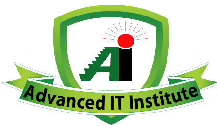

Welcome to Complete Computer Office Application Course
এই কোর্স থেকে কি কি শিখতে পারবে?
- ইংরেজি ও বাংলা টাইপিং:
দৃষ্টিনন্দন একটি সফটওয়্যারের মাধ্যমে গেমস খেলতে খেলতে শিখে যাবে
ইংরেজি ও বাংলা টাইপিং। কম্পিউটার সম্পর্কিত জবগুলোতে প্রতি মিনিটে তুমি কয়টি শব্দ টাইপ করতে পারো সেটি
যাচাই করা হয়। প্রতি মিনিটে কমপক্ষে ইংরেজিতে ২০ থেকে ২৫ টি শব্দ এবং বাংলায় ২০ টি শব্দ টাইপ করতে জানতে হয়।
আমাদের শিক্ষার্থীদের টাইপিং স্পিড গড়ে ৩০ থেকে ৪০ টি শব্দ। উল্লেখ্য ৫ টি অক্ষর সমান একটি শব্দ ধরা হয়।
- মাইক্রোসফট ওয়ার্ড:
অফিসিয়াল বা দৈনন্দিন জীবনের সকল লেখালেখির কাজের জন্য এই সফটওয়্যার ব্যবহার
করা হয়। যেমন: আবেদন পত্র, প্রশ্ন, দলিল, নোটিশ ইত্যাদি এই সফটওয়্যার ব্যবহার করেই তৈরি করা হয়।
- মাইক্রোসফট এক্সেল:
যাবতীয় হিসাব নিকাশের কাজের জন্য ব্যবহৃত হয় মাইক্রোসফট এক্সেল। এটি ব্যবহার
করে ব্যক্তিগত হিসাব যেমন করা যায় তেমনি প্রফেশনাল সকল ধরনের হিসাব নিকাশের কাজও করা যায়। বর্তমানে জব
সেক্টরে এর চাহিদা অনেক বেশি।
- মাইক্রোসফট পাওয়ারপয়েন্ট:
প্রজেক্টরে আমরা যে ক্লাসগুলো দেখি তা এই সফটওয়্যার দিয়েই তৈরি করা হয়।
এটি দিয়ে প্রেজেন্টেশনের জন্য আকর্ষণীয় স্লাইড তৈরি করা হয়। ভার্সিটির এবং চাকরির প্রেজেন্টেশনের জন্য
তোমাকে এটি অবশ্যই জানতে হবে।
- মাইক্রোসফট একসেস:
বড় বড় প্রতিষ্ঠানের ডেটাবেজ ম্যানেজ করতে এই সফটওয়্যারের কাজ জানাটা জরুরি।
- বেসিক এডোবি ফটোশপ:
যেকোনো ছবি এডিট করার জন্য পৃথিবীর সবচেয়ে বেস্ট সফটওয়্যার হলো ফটোশপ।
স্টুডিওতে তোলা ছবিগুলো এই সফটওয়্যার দিয়েই এডিট করা হয়।
- ডকুমেন্ট ও ছবি স্ক্যানিং:
ব্যক্তিগত ও অফিসিয়াল যাবতীয় ডকুমেন্ট ও ছবি কিভাবে স্ক্যান করতে হয়
তা প্র্যাকটিক্যালি শিখতে পারবে।
- ডকুমেন্ট ও ছবি প্রিন্টিং:
কিভাবে যেকোনো ডকুমেন্ট ও ছবি প্রিন্ট করতে পারবে তা শেখানো হয়।
- বেসিক ইন্টারনেট:
অনলাইনে বিভিন্ন প্রতিষ্ঠান, বিশ্ববিদ্যালয়, চাকরির আবেদন ফরম পূরণ, সঠিকভাবে
ইমেইল হ্যান্ডেল করা ইত্যাদি খুঁটিনাটি কাজ শেখানো হয়।
- বেসিক ট্রাবলশ্যুটিং ও কম্পিউটার মেইনটেনেন্স: সফটওয়্যার ইনস্টলেশন ও আনইনস্টলেশন, উইন্ডোজ সেটাপ এবং
কম্পিউটারের টুকিটাকি সমস্যা যেন নিজেই ঠিক করা যায় তা শেখানো হয়।
- বোনাস:
অতি প্রয়োজনীয় ইউটিলিটি সফটওয়্যারের ব্যবহার।
কাদের জন্য কোর্সটি?
যেকোনো ব্যক্তিই কোর্সটি করতে পারে তবে কারিগরি শিক্ষা বোর্ডের সার্টিফিকেটের জন্য ন্যূনতম JSC পাস শিক্ষার্থী হতে
হয়।
বিশেষ করে স্টুডেন্টদের জন্য এই কোর্সটি করা খুবই জরুরি। কেননা এই কোর্সটি করা থাকলে তোমার আইসিটি বিষয়ক জ্ঞান যেমন
বৃদ্ধি পাবে একইভাবে বিশ্ববিদ্যালয়ের ভর্তি পরীক্ষায় আসা প্রশ্নের উত্তর দিতে ও ভার্সিটির অ্যাসাইনমেন্ট,
প্রেজেন্টেশন, রিপোর্ট, জার্নাল ইত্যাদি করতেও সুবিধা হবে। যারা ভাবে যে পরেও করা যাবে আসলে সেটা যে কত বড় ভুল
সিদ্ধান্ত তা কোর্স না করা প্রতিটি শিক্ষার্থী মাত্রই অনুভব করেন। কম্পিউটার কোর্স করে তা নিয়মিত চর্চা করার
মাধ্যমেই দক্ষতা অর্জন হয়, হঠাৎ করে কেউ দক্ষ হতে পারেন না। আর যেকোনো চাকরির জন্য কম্পিউটার জানা থাকাটা খুবই
জরুরি।
তুমি কেন এই কোর্সটি করবে?
প্রতিযোগিতায় প্রত্যেকেই জয়ী হতে চায়। কিন্তু সেজন্য প্রয়োজন হয় সঠিক স্কিল বা দক্ষতা। বর্তমানে সকল ধরনের চাকরিতে
কম্পিউটার স্কিল থাকাটা বাধ্যতামূলক। শুধুমাত্র একাডেমিক সার্টিফিকেট দিয়ে চাকরিতে এপ্লাই করাটা নিতান্তই বোকামি।
তুমি নিজেই তোমার প্রতিষ্ঠানে কোনো ব্যক্তিকে চাকরি দিতে চাইলে নিশ্চয়ই কম্পিউটারে দক্ষ কাউকেই চাকরি দিবে! তাই না?
তুমি কি কি সুবিধা পাবে?
- প্রতি ব্যাচে মাত্র ৭ থেকে ৮ জন শিক্ষার্থী (ল্যাবের সক্ষমতা ১০ জন)
- সার্বক্ষণিক ২ জন ইনস্ট্রাক্টর (একজন মেয়ে)
- প্রতিটি কম্পিউটারে ইন্টারনেট সংযোগ (ওয়াই-ফাই সুবিধাসহ)
- সার্বক্ষণিক ইলেকট্রিসিটি সুবিধা (কারেন্ট চলে গেলেও ক্লাস চালু থাকে)
- মাত্র ১ ঘন্টার সম্পূর্ণ প্র্যাকটিক্যাল ক্লাস
- সুবিধাজনক সময়ে ক্লাসের সুবিধা (সকাল ৯ টা থেকে ১০ টা, ১০ থেকে ১১ টা এভাবে বিকেল ৫ টা পর্যন্ত ব্যাচ
অনুযায়ী ক্লাস করানো হয়। তোমার সুবিধা অনুযায়ী তুমি ক্লাস করতে পারবে।)
- সপ্তাহে মাত্র ৩দিন ক্লাস
- ফেসবুক গ্রুপে নিয়মিত পোস্টের মাধ্যমে বিভিন্ন সমস্যার সহজ সমাধান
- Team Viewer বা Anydesk ব্যবহার করে অনলাইন আইটি সাপোর্ট
- কম্পিউটার সম্পর্কিত যাবতীয় সাপোর্ট
- Advanced IT Institute এর নিজস্ব অ্যাপের মাধ্যমে বিভিন্ন কুইজ ও পুরস্কার জেতার সুযোগ।